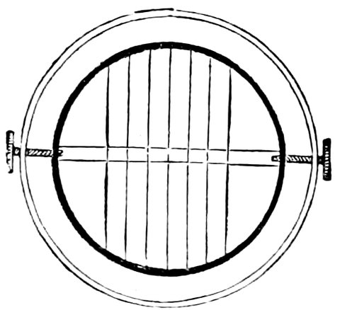

Research Themes

These are the questions I keep returning to, written for anyone thinking about doing research with me, whether that is a Masters project or a PhD. I have tried to tell each one the way I would over a coffee: where it comes from, what is scientifically at stake, and where a project could take it. If one of them catches you, write to me at hihshaish@birzeit.edu or hisham.ihshaish@uwe.ac.uk.
Two of the themes below rest on manuscripts, one now with a journal and one in final preparation, and one on a framework paper with a companion study in preparation. None has been peer reviewed yet, and the figures shown from them are marked as such. Where I cannot yet share a paper publicly, I can provide access to the preprint and the codebase for those interested. Write to hihshaish@birzeit.edu or hisham.ihshaish@uwe.ac.uk.
Where this comes from
Most of my research has started inside a live system, with a partner who needed something to work: repair records at GE Aerospace, bills of quantities for an Innovate UK programme, a wind farm in north-eastern France, a university helpdesk, farmers' complaints in Egypt, and the adaptive learning platform I now lead data and AI for. In almost every one of them, the hard part turned out to be the measurement, not the model. What was written down, by whom, at what stage, and against which labels quietly decided what the score meant. The three groups below are what that lesson turned into.
Applied machine learning: measuring and maintaining models that live in operations
Text classifiers have moved out of the benchmark literature and into daily operations: maintenance shops, safety programmes, procurement offices and helpdesks now run models over the text their staff write. Once a model lives there, the question stops being how good it is and becomes how anyone would know, because the evaluation has to be built from the records the work itself produces. A deployed classifiera is judged by a number, and the number depends on things the model never sees: which record of the case was read, which labels were used, and which decision rule turned scores into decisions. The two active themes here ask what the number would have been had those choices been made differently, worked out on maintenance and safety reports spanning decades.
Stochastic modelling and time series
This is the older thread, from a PhD in parallel computing and a postdoc in climate networks, and it is the one that keeps supplying tools to the other two. The common object is a time series whose statistics are not Gaussian, whose memory is long, and whose interesting structure only appears at large system size or in the tails.
Learning systems with people in them
The third category is where the measurement problem includes the person being measured. The system adapts to a person, the person adapts to the system, and the record of what happened in a session is not the record of what the person can now do.
Smaller threads I still return to
- Task-oriented dialogue systems, and the tension between the performance optimum and the quality optimum, from Ryan Fellows' PhD [1]. The question has aged well: the systems are now much better at the first and no better at the second.
- Characterising search spaces so that an optimiser can pick its own operators, with Mehmet Aydin and Rafet Durgut [2, 3]. A measurement problem again: which measurable features of a search space predict which operator will work.
- Estimating defection in subscription markets, an empirical study from scholarly publishing with Michael Roberts and Ignacio Deza [4]. Machine-learning prediction of which institutional customers will leave, from their usage records, before the cancellation arrives.
- Synthetic personalities for autonomous objects, and the Moral Machine: An internally funded project in 2020 and 2021 on what it means to give an object a character, and the questions about machine ethics that the Moral Machine experiment made empirical [5].
Working with me
A project with me usually starts from a measurement question inside a system someone actually runs, with data we can get and a partner who will use the answer. We write the analysis plan down before the results arrive, we release the code, and we say what did not work. The table below is how I think about scale. If one of the questions above reads like something you want to spend a semester or three years on, or you have a system with the same shape, email me at either address, hihshaish@birzeit.edu or hisham.ihshaish@uwe.ac.uk. I am at UWE Bristol, and I also teach at Birzeit University.
| Scale | What it looks like | What you need to bring |
|---|---|---|
| Masters project | One question, one existing dataset or a public one, a registered analysis plan, a result either way, a repository. | Python, some statistics, and the patience to read the data before modelling it. |
| PhD | A measurement problem in a live system, a partner, a chain of three or four studies that each change what the next one asks. | The above, plus a taste for finding out that the obvious explanation is wrong. |
Notes
a By a classifier I mean a machine learning model that assigns each input, here a piece of text, to one of a set of categories; deployed means it runs inside a real workflow rather than an experiment. ↩
References for this page
- Fellows, R., Ihshaish, H., Battle, S., Haines, C., Mayhew, P. and Deza, J. I. (2022). Task-oriented dialogue systems: performance vs quality-optima, a review. Computer Science and Information Technology (CS and IT). doi:10.5121/csit.2022.121306
- Aydin, M. E., Durgut, R., Rakib, A. and Ihshaish, H. (2024). Feature-based search space characterisation for data-driven adaptive operator selection. Evolving Systems, 15(1), 99-114. doi:10.1007/s12530-023-09560-7
- Durgut, R., Aydin, M., Ihshaish, H. and Rakib, A. (2022). Analysing the predictivity of features to characterise the search space. ICANN 2022. doi:10.1007/978-3-031-15937-4_1
- Roberts, M., Deza, J. I., Ihshaish, H. and Zhu, Y. (2022). Estimating defection in subscription-type markets: empirical analysis from the scholarly publishing industry. arXiv:2211.09970
- Awad, E., Dsouza, S., Kim, R., Schulz, J., Henrich, J., Shariff, A., Bonnefon, J.-F. and Rahwan, I. (2018). The Moral Machine experiment. Nature, 563, 59-64. doi:10.1038/s41586-018-0637-6